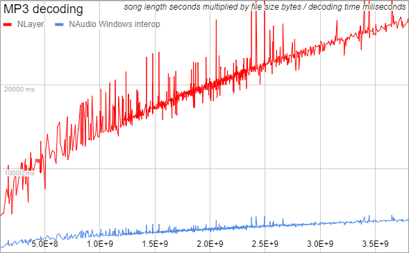

Overview
Runtime AudioClip Loader allows you to load MP3, WAV, Ogg, AIFF into Unity's AudioClip from file or internet on many platforms.
Audio files are loaded into Unity’s AudioClip, thus audio mixers, spatial audio and AudioSource are fully supported.
Documentation
Support
Demos
WebGL | Windows IL2CPP | Windows Mono
Includes example scenes and scripts.
Compatibility
• Windows
• WebGL
• IL2CPP
• Compatible with Unity 2020.3 - 2023
Uses fully mannaged libraries as fallback thus all platforms are theoretically supported.
Possible uses
• download and play all 4 formats from internet
• add support for modding into your game, as your players can easily replace sounds
• put your sounds outside Unity project to get theoretically faster build times
Documentation
Simple example of loading and playing audio file (any format) from anywhere on your disk:
var config = new AudioLoaderConfig();
config.DataStream = File.OpenRead(pathToAudioFile);
var loader = new AudioLoader(config);
loader.StartLoading();
while (!loader.IsLoadingDone)
yield return new WaitForEndOfFrame();
var audioSource = GetComponent<AudioSource>();
audioSource.clip = loader.AudioClip;
audioSource.Play();
Loading methods:
- load on demand (streaming AudioClip) - decoding is done on demand in Unity thread, ideal for long audio clips you will use only once
- load all parts in background thread - does not slow Unity thread, decoding is split into parts and executed in background thread, slowest but does not cause any FPS hitch or drop at all, AudioClip can be played after first part is loaded
- load all parts in Unity thread - decoding is split into parts and executed in Unity thread, AudioClip can be played after first part is loaded
- load all parts all at once in Unity thread - worst option, causes main Unity thread to freeze, supported because this is the only working method on some platforms
When Unity can't use native Windows decoder it fall backs to mannaged decoders which come with many limitations as described in table bellow.
| format | this asset (Windows) | this asset (other platforms) | Unity (with WWW.GetAudioClip) |
|---|---|---|---|
| MP3 | full support | only 44.1kHz stereo | phones |
| WAV | full support | only if no compression is used | phones |
| Ogg | full support | only Xiph.org Ogg Skeleton container | web, standalones |
| AIFF | full support | only if no compression is used | no |
Before shipping your game It’s better to make sure all your audio files are loadable. If some are not, you might be able to fix it by encoding them with different settings.
Remember to Destroy(audioClip); once you are done using it, otherwise you risk running out of memory.
WAV and AIFF are loadable on any platform if they are not compressed at all (only simple Pcm or IeeeFloat formats). If they are compressed Window’s ACM is used.
Ogg is loadable only if it uses Xiph.org Ogg Skeleton container, to make sure that is the case you may use free audio software such as https://www.audacityteam.org/ or some online convert tool such as https://audio.online-convert.com/
Unity does not support Streaming AudioClips in WebGL, they explain it here https://docs.unity3d.com/Manual/webgl-audio.html In WebGL, only LoadMethod.AllPartsInUnityThread is supported, it automatically reverts to it if it detects it's running inside WebGL. In WebGL, the AudioClip is playable only once it's fully loaded, if you started playing it during loading you will not hear anything, you need to stop and start the AudioSource again.
If you have any issues, feel free to contact me at [nei.jakub@gmail.com](nei.jakub@gmail.com?subject=Runtime AudioClip Loader&body=Hello, Iam writing to you in regards to your Unity Asset Store Asset Runtime AudioClip Loader.) It would be nice to send a link to anything you have created with this asset.
You can use either recommended OOP approach with instances of RuntimeAudioClipLoader.AudioLoader or legacy static manager class RuntimeAudioClipLoader.Manager.
RuntimeAudioClipLoader.Manager is kept for backwards compatibility and internally uses instances of RuntimeAudioClipLoader.AudioLoader.
Third party libraries
Includes third party compiled libraries NAudio, NVorbis and NLayer:
- https://github.com/naudio/NAudio
- https://github.com/NVorbis/NVorbis
- https://github.com/naudio/NLayer
NAudio
- supports WAV, MP3, WAV and AIFF formats
- uses interop with Windows's Multimedia Extensions (MME) and Audio Compression Manager (ACM)
- uses ACM for WAV and AIFF if they are compressed.
- uses MME for MP3 decoding.
Above means same formats may only be loadable on Windows
NVorbis
- adds managed Ogg support (through fully managed C# code).
Layer
- adds managed MP3 support (through fully managed C# code).
- is able to load only stereo MP3s with 44.1kHz sample rate.
NVorbis and NLayer are decoders only, it's not possible to encode OGG and MP3 with them.
By default, based on UnityEngine.Application.platform it is automatically decided whether to use NAudio or NLayer for MP3 decoding.
NLayer fully managed C# MP3 decoder failed on 55 out of 1552 test cases and was on average 7.2 times slower than Windows interop MP3 decoder:

Changelog
3.0
- Updated NAudio and NLayer to latest versions
- NLayer changed license to MIT
- Added example: simplest load from disk
- Added LoadMethod.AllAtOnceInUnityThread
- Fixed issue where WebGL creates AudioClip with less samples than provided
- Fixed few issues in Mac OS X build
- Fixed LoadMethod config
- Dropped older Unity support
2.0
- Added NLayer for multiplatform MP3 loading
- Added object oriented approach
- Added example: simplest load from internet
- Improved code
- Improved documentation
- Decreased memory consumption
- Fixed various bugs
1.1
- Added example: load and play from internet
- Added compatibility for older Unity versions
1.0
- First release